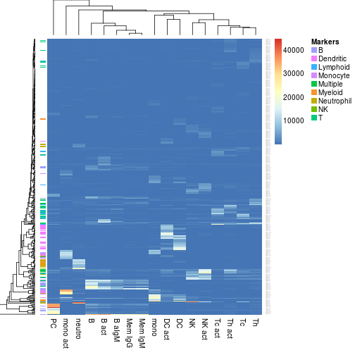

S4 (MarkerList)
`.atrack`(object, data = NULL, ..., view = c("single", "split", "predict"))
data is added, and markers are
shown on the track associated with the column
corresponding to its maximum value. This method allows to add annotation tracks in heatmaps
produced by aheatmap, to highlight the
position of markers, when plotting either the global
expression values or cell type-specific signatures,
whether measured or estimated.
# load IRIS markers and the Abbas signature matrixm <- MarkerList('IRIS')data(Abbas)aheatmap(Abbas, annRow=m)